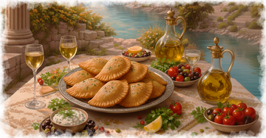
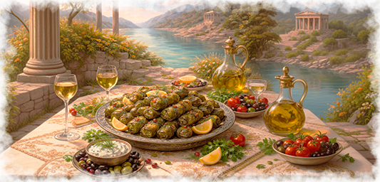
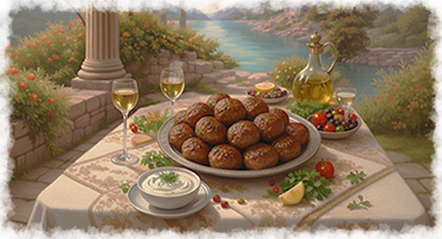

Шмуш (или шмуша). Король праздничного стола. Это многослойный пирог, где листы тонко раскатанного теста чередуются с начинкой из рубленого мяса и сладкой тыквы. Сочетание солоноватого, насыщенного мяса и нежной сладости тыквы создает тот самый баланс умами, который сегодня ищут шеф-повара в лучших ресторанах мира.
Сармала (сарма). Далекий предок долмы. Миниатюрные «конвертики» из виноградных листьев, собранных в мае, скрывают внутри начинку из риса, мяса и целого букета степных трав. Сармала готовится медленно, томится в бульоне и подается с густым домашним йогуртом — катыком, приправленным чесноком.

Греческие фрикадельки, известные как кефтедес (греч. κεφτεδες), — это ароматные мясные шарики, чаще всего из говяжьего, бараньего или свиного фарша, обжаренные до золотистой корочки. Ключевая особенность — добавление большого количества свежих трав (мята, петрушка), чеснока, лука и иногда сухого вина.
Сувлаки (Souvlaki): Небольшие шашлычки на деревянных шпажках. В Крыму их можно найти как в специализированных точках быстрого питания, так и в ресторанах.

В Крыму фасолада - фасолевый суп, не является массовым «уличным» блюдом (как чебуреки или янтыки), но её можно встретить в меню заведений, специализирующихся на греческой кухне и традициях народов полуострова. Благодаря глубоким историческим связям Крыма с Грецией, этот суп воспринимается здесь как часть аутентичного культурного наследия.
Дзадзики (Tzatziki): Освежающий холодный соус-закуска из густого йогурта, тертого огурца, чеснока и оливкового масла. Его популярность на полуострове объясняется обилием свежих овощей и развитой культурой молочного производства.